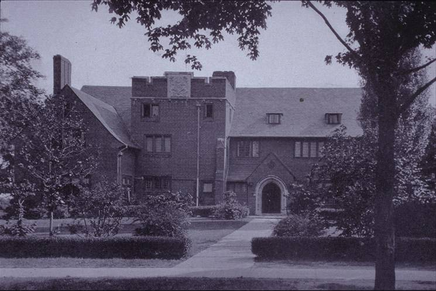
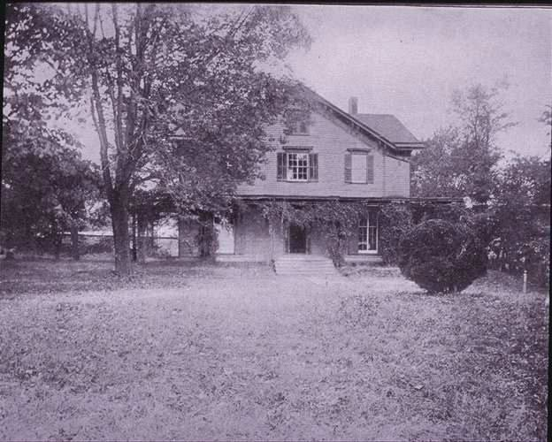
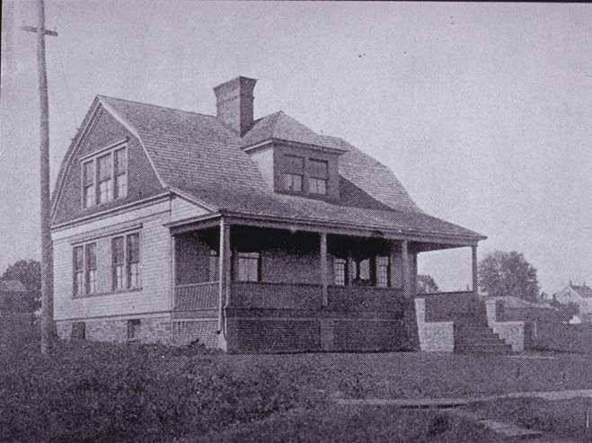
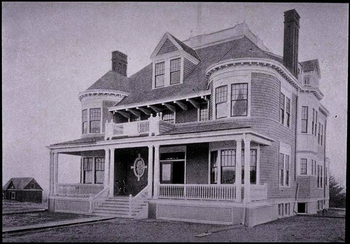
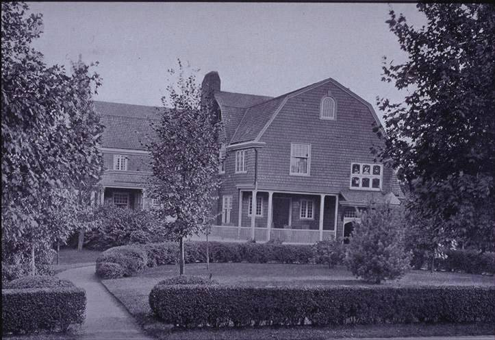
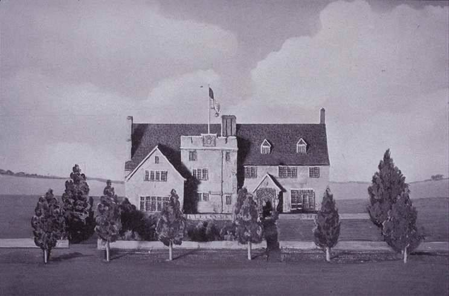
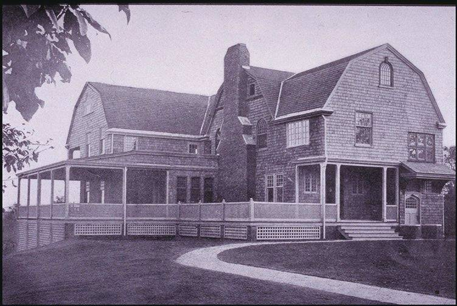
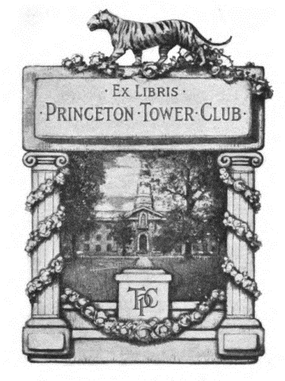

A $400 wager
Four sophomores and Frank “Pop” Little ’03 propose a new upper-class eating club and put down a $400 stake in April.

01Our History
Before it settled at 13 Prospect Avenue, Tower lived in a borrowed “monastery,” an incubator, a turreted shingle house and a gambrel-roofed cottage on Nassau Street. Here is how a $400 wager became a Princeton institution.
Founded 1902
13 Prospect since 1917
—Spring, 1902
Four sophomores and a junior named Frank “Pop” Little wanted a new kind of upper-class club. In April they put down $400 to make it real. By September, Tower had twenty-six members and nowhere permanent to live.
02The Timeline
Four sophomores and Frank “Pop” Little ’03 propose a new upper-class eating club and put down a $400 stake in April.

Tower’s first home is a modest shingle house on University Place, known as “the Monastery” or the Bachelor’s Club. It has thirteen seniors and thirteen juniors.

When Charter moves out of Gulick House on Olden Street, Tower moves in, but only for a year.

Tower takes over Cottage’s turreted 1892 clubhouse, moved down the Street to make room for Cottage’s new home. It comes with hot-air heating, a sidewalk and a tennis court.

While most clubs are flocking to Prospect, Tower moves to Nassau Street, into Quadrangle’s former clubhouse with its gambrel roof and wraparound porches.

Having outgrown the Fine House, Tower buys land between Campus and Cannon and commissions Roderic Barnes ’03 to design it.

Brick, slate and Collegiate Gothic, with a crenellated tower bearing the club seal at its center. It has been our home ever since.
A fire breaks out but stays mostly inside the tower itself. Repairs are finished quickly, and Tower carries on.
Even when membership falls to fifteen ROTC officers, the doors of Tower stay open.
Tower is among the first clubs on Prospect to admit women, and it helps found the Interclub Council and the Prospect Foundation.
A sunroom, a billiards room, new kitchens and a light-filled dining addition, with roughly 220 members carrying the tradition forward.
A year of dinners, reunions and stories to celebrate a century and a quarter of Tower.
The celebration →03Then & Now
Drag across the photograph to go from 1921 to today. The arched oak door, the crenellated tower and the slate roof are all still here.
 1921
Today
1921
Today
1921 photograph: Bric-a-Brac, via the Princetoniana Museum
04The Architecture
Barnes drew on the Collegiate Gothic brick of Campus Club, Cap & Gown and 1879 Hall. At the center of the facade he put a square, crenellated tower that gave the club its emblem and let staff reach every floor.
The aim, one member wrote, was “an ample, attractive, and practical clubhouse without making it ostentatious.” It was no palace like Cottage or Ivy, and Tower has always liked it that way.
05From the Archives
Early pictures of every house Tower has called home. Drag them around the table.



Drag the photographs
Archival photographs: Princeton University Archives and the Bric-a-Brac yearbooks, courtesy of the Princetoniana Museum.